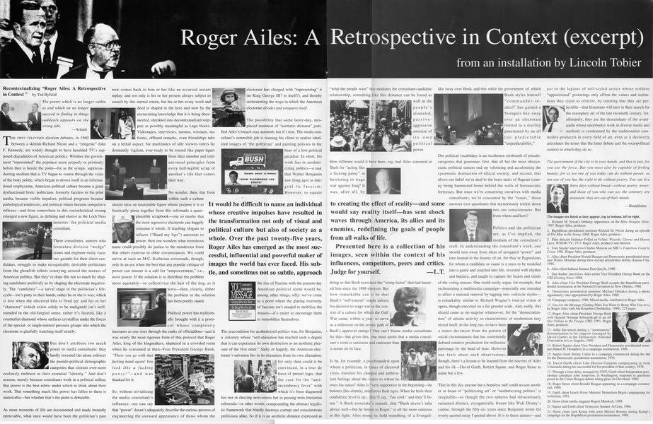

I wrote this essay in 1991/1992, which might seem a lifetime away, but it remains all too relevant. It first appeared in a pamphlet distributed at an exhibition called “Roger Ailes: A Retrospective in Context,” staged in 1992. At the time, Ailes was just a freelance political media consultant; four years later, he went on to found Fox News.
In one sense the essay was an integral part of an artwork by Lincoln Tobier and myself. But in its voice and its disposable quality, it also stood outside of the work — with Lincoln as the artist and myself as some sort of critic. That ambiguity was central to how he and I worked together, and it was central to the artworks we made, which gestured at others’ creativity rather than our own.
The exhibition appeared at Real Art Ways (Hartford CT), the Eye Gallery (San Francisco CA), and the Randolph Street Gallery (Chicago IL) during the 1992 US presidential election. This slightly expanded version of the essay appeared in a spread in an early issue of Frieze, back when it was still obscure (#7, Nov–Dec 1992). The essay also appeared in German; both were among the very first texts to appear on nettime (EN, DE).

The poetry which is no longer within us and which we no longer succeed in finding in things suddenly appears on the wrong side. — Antonin Artaud
The first televised election debates, in 1960 between a skittish Richard Nixon and a “telegenic” John F. Kennedy, are widely thought to have heralded TVs supposed degradation of American politics. Whether the government “represented” the populace more properly or pristinely before then is beside the point — for as the syrupy, superconducting medium that is TV began to course through the veins of the body politic, which began to drown itself in an informational emphysema, American political culture became a giant dysfunctional brain: politicians, formerly faceless in the print media, became visible impulses, political programs became pathological tendencies, and political rituals became compulsive reflexes — and from somewhere in this socioelectrical swamp emerged a new figure, as defining and elusive as the Loch Ness monster: the political media consultant.
These consultants, auteurs who formulate divisive “wedge” issues and engineer rosily vacuous gestalts for their client candidates, struggle to make recognizably desirable politicians from the ghoulish robots scurrying around the morass of American politics. But they’ve done this not so much by shaping candidates positively as by shaping the electorate negatively. The “candidate” — a larval stage in the politician’s life-cycle — isn’t putty in their hands, rather he or she is wax, which is lost when the electoral kiln is fired up; and his or her “character” (which exists solely to be maligned) isn’t well-rounded in the old-fangled sense, rather it’s faceted, like a counterfeit diamond whose surfaces crystallize under the forces of the special- or single-interest pressure groups into which the electorate is gleefully watching itself stratify.
But don’t attribute too much power to media consultants: they hardly invented (let alone enforce) the pseudo-political demographic categories that citizens ever-more zealously embrace as their essential “identity.” And don’t assume, merely because consultants work in a political milieu, that power is the best rubric under which to think about their work. That something much like power has fallen to them is undeniable — but whether that’s the point is debatable.
As more moments of life are documented and made instantly retrievable, what once would have been the politicians past now comes back to him or her like an accursed instant replay; and not only is his or her present always subject to assault by this eternal return, but his or her every word and deed is shaped in the here and now by the excruciating knowledge that it is being documented, shredded into decontextualized snippets as possibly meaningful as Lego blocks. Videotapes, interviews, memos, wiretaps, tax forms, offhand remarks, even friendships take on a lethal aspect, for multitudes of idle viewer-voters lie dormantly vigilant, ever-ready to be roused like paper tigers from their slumber and infer universal principles from every half-legible scrap of another’s life that comes their way.
No wonder, then, that from within such a culture should arise an inscrutable figure whose purpose it is to frantically piece together from this infornado a quasi-plausible scrapbook — one so mushy that the most regressive electorate can happily consume it whole. If teaching slogans to infants (“Read my lips”) amounts to power, then one wonders what monstrous name could possibly do justice to the murderous force that others exercise in other circumstances. We could arrive at such an M.C.-Escherian crossroads, though, only in an era when the best that any popular critique of power can muster is a call for empowerment, i.e., more power. If the solution is to distribute the problem more equitably — to collectivize the hair of the dog, as it were — then, clearly, either the problem or the solution has been poorly stated.
Political power has traditionally brought with it a protocol whose complexity increases as one rises through the ranks of officialdom — and it was nearly the most rigorous form of this protocol that Roger Ailes, king of the kingmakers, shattered in a crowded room when he screamed at then-Vice President George Bush,”There you go with that fucking hand again! You look like a fucking pansy!” — and was thanked for it.
So, without trivializing the media consultant’s influence, one can say that power doesn’t adequately describe the curious process of engineering the outward appearance of those whom the electorate has charged with representing it (to the King of England? to itself?), and thereby orchestrating the ways in which the American electorate divides and conquers itself.
The possibility that some latter-day, misplaced mutation of aesthetic distance justified Ailes’s breach may astonish, but it’s true. The media consultant’s ostensible job is training his client to realize idealized images of the politician and painting policies in the hues of a lost political paradise. In short, his work lies in aestheticizing politics — a task that Walter Benjamin saw (long ago) as integral to fascism. However, to equate the rise of Nazism with the present-day American political scene would be, among other things, silly: we’ve come to a point where the glaring extremity of fascism isn’t needed to mobilize the masses — its easier to encourage them to immobilize themselves.
The precondition for aestheticized politics was, for Benjamin, a citizenry whose “self-alienation has reached such a degree that it can experience its own destruction as an aesthetic pleasure of the first order.” Sadly or happily, the American electorate’s salvation lies in its alienation from its own alienation: for only then could it be convinced, in a tour de force of pretzel logic, that the cure for the anti-incumbency fever with which its been diagnosed lies not in electing newcomers but in passing term-limitation referenda — in other words, compounding the abstract legalistic framework that blindly destroys corrupt and conscientious politicians alike. So if it is an aesthetic distance expressed as “what the people want” that mediates the consultant-candidate relationship, something like this distance can be found as well in the people’s alienated, passive-aggressive exercise of its own political power.
How different would it have been, say, had Ailes screamed at Bush for “acting like a fucking pansy” in hesitating to wage war against Iraq? It was, after all, by doing so that Bush exorcised the “wimp factor” that had haunted him since the 1988 election. But how remarkable can it be that Bush’s “self-esteem” might inform his decision to wage war in the context of a culture for which the Gulf War came, within a year, to serve as a milestone on the erratic path of Bush’s approval ratings? One can’t blame media consultants for this — but given this, one must admit that a media consultant’s work is curiouser and curiouser than it seems on its face.
Is he, for example, a psychoanalyst upon whom a politician, in times of electoral crisis, transfers his charged and ambivalent feelings about the voters to whom he owes his status? Ailes is “very supportive in the beginning — he bolsters [his clients], reinforces their egos. When he feels their confidence level is up… [h]e’ll say, ‘You stink!’ and they’ll listen.” A Bush associates remark, that “Bush doesn’t take advice well — but he listens to Roger,” is all the more ominous in this light: Ailes seems to hold something of a Svengali-like sway over Bush, and this while the government of which Bush styles himself commander-in-chief has gained a Svengali-like sway over an electorate limited to a docility punctuated by an all too predictable unpredictability.
Our political vocabulary is an incoherent mishmash of pseudo-categories that guarantee, first, that all but the most idiosyncratic political stances end up valorizing and accelerating the systematic destruction of ethical society, and second, that above our babel we’re deaf to the brass tacks of flagrant tyranny being hammered home behind the walls of bureaucratic fortresses. But since were concerning ourselves with media consultants, were consumed by the “issues,” those answers (not questions) that mysteriously trickle down into our consciousness. But from where and how?
Politics and the politician are, as I’ve implied, the medium of the consultant’s craft. In understanding the consultant’s work, one should turn away from ideas of arrogated “power” and turn instead to the history of art, for they’re Pygmalions for whom a candidate or cause is a mass to be modeled into a genre and coached into life, invested with rhythm and balance, and taught to capture the hearts and minds of the voting masses. One could easily argue, for example, that orchestrating a multimedia campaign — especially one intended to effect a national renewal by tapping into volkisch myths — is remarkably similar to Richard Wagner’s total-art vision of opera, though executed on a far grander scale. And, really, this should come as no surprise whatsoever, for the democratization of artistic activity so characteristic of modernism may reveal itself, in the long run, to have been a minor deviation from the pattern of social circumstances that has consistently defined creative production for millennia: patronage by the head of state. However one feels about such observations, though, there’s a lesson to be learned from the oeuvres of Ailes and his ilk — David Garth, Larry McCarthy, Robert Squier, and Roger Stone to name but a few.
That in this day anyone but a hopeless naif could accuse another or boast of “politicizing art” or “aestheticizing politics” is laughable — as though the two spheres had miraculously remained distinct, cryogenically frozen like Walt Disney’s corpse, through the fifty-six years since Benjamin wrote the overly quoted essay I quoted above. It is to these auteurs — and not to the legions of self-styled artists whose strident oppositional posturings only affirm the values and institutions they claim to criticize, by insisting that they are perfectible — that historians will turn in their search for the exemplary art of the late twentieth century: for, ultimately, they are the descendants of the avant-garde whose unorthodox work in diverse media and methods is condemned by the traditionalist commodity-producers in every field of art, even as it decisively articulates the terms that the latter debate and the sociopolitical context in which they do so.
The government of the city is in your hands, and that is just, for you are the force. But you must also be capable of feeling beauty; for as not one of you today can do without power, so not one of you has the right to do without poetry. You can live three days with- out bread — without poetry, never; and those of you who can say the contrary are mistaken; they are out of their minds. — Charles Baudelaire